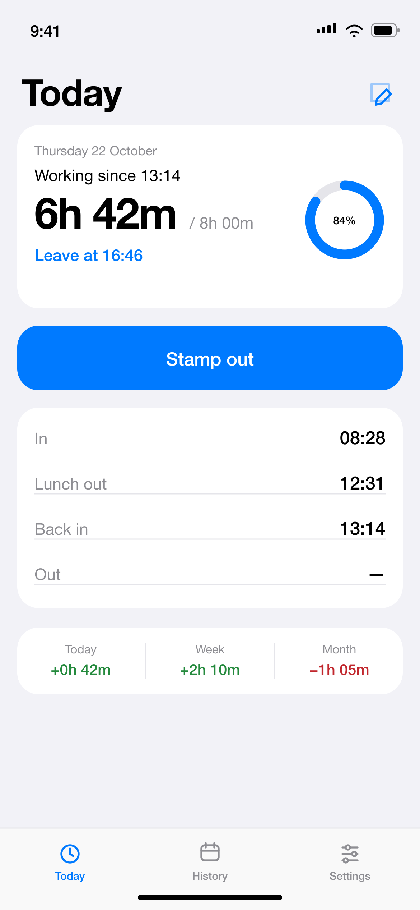
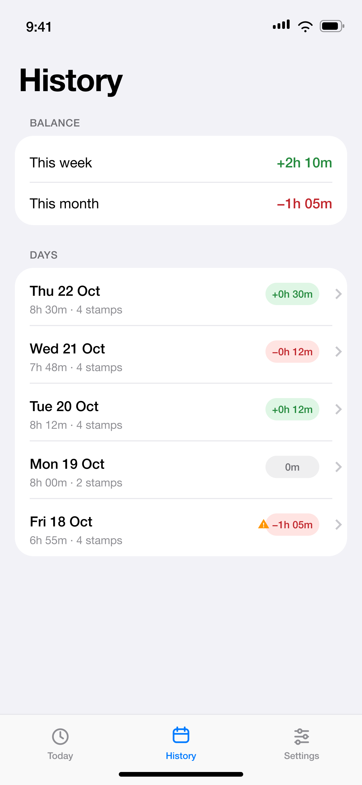
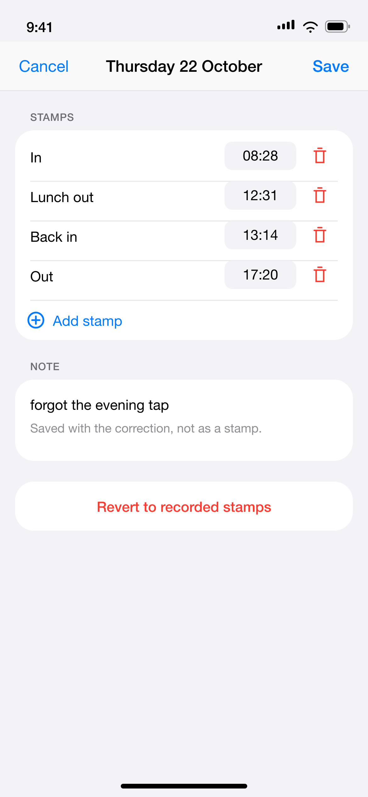
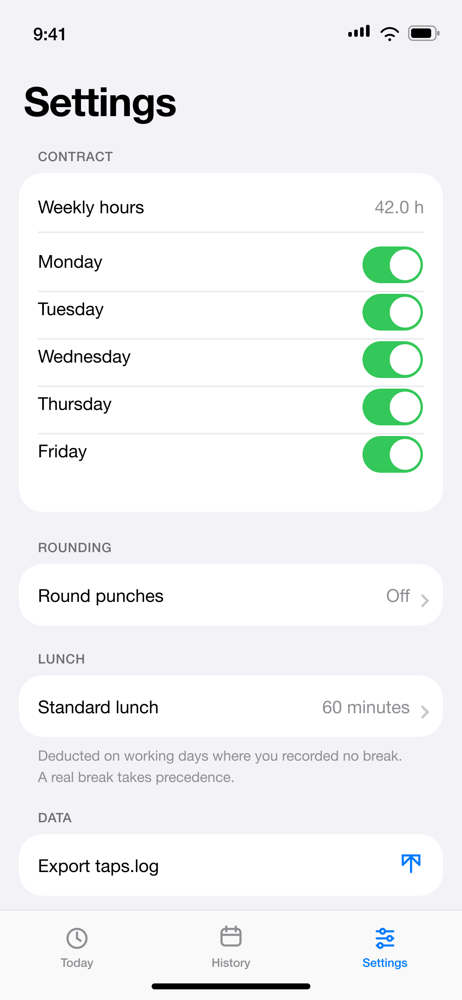

Know when you can leave.
A private hours ledger for the badge terminal that records your time but never shows you the balance.




One tap, four stamps, one honest balance
The app mirrors the terminal's in/out toggle, so the meaning of a tap comes from its position — exactly like the machine at the door.
Stamp
Tap the big button, or run the Stamp action from a Back Tap Shortcut.
Let it toggle
1 opens work, 2 closes it for lunch, 3 opens it again, 4 closes the day.
Read the number
Worked time, week and month balance, and the exact time you can leave.
Small on purpose
Leave at
Now plus the remaining time, shown only while you are actually working.
Real lunch
A standard deduction when you don't stamp out; the actual break when you do.
Fix a day
Edit the times you forgot. The original taps stay in the log, never rewritten.
Your contract
Weekly hours, working days, rounding and holidays — the target is yours.
Plain text
One append-only file you can open, export and read ten years from now.
Nothing leaves
No account, no ads, no analytics, no network requests at all.
Install
With a Mac
The repository is the source. You need Xcode, XcodeGen and a few minutes.
brew install xcodegen
git clone https://github.com/dovidio/time-tracking.git
cd time-tracking
xcodegen generate
open TimeTracker.xcodeprojPick your team in Signing & Capabilities and run it on the phone. A free Apple ID works; the build then expires every 7 days.
Without a Mac
Installable builds are distributed through TestFlight and the App Store, neither of which needs a Mac on your side — but a build has to be uploaded from a Mac first.
There is no public build yet. When there is, the link will be here and in the README.